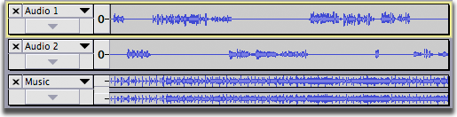
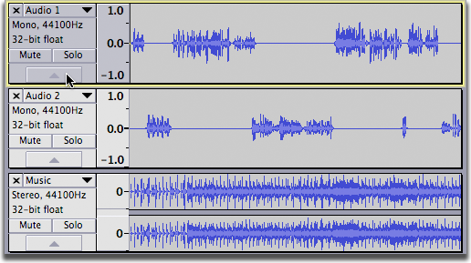
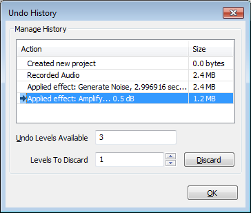
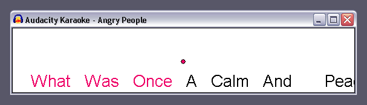
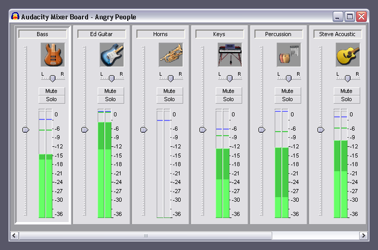

View Menu
From Audacity Manual
View Menu has commands that determine the amount of detail you see in all the tracks in the project window. It also lets you show or hide Toolbars and some additional windows such as Undo History.
Zoom In CTRL + 1
Zooms in on the horizontal axis of the audio, displaying more detail over a shorter length of time. You can also use the zoom tool to zoom in on a particular part of the window.
Zoom Normal CTRL + 2
Zooms to the default view, which displays about one inch per second.
Zoom Out CTRL + 3
Zooms out, displaying less detail over a greater length of time.
Zoom to Selection CTRL + E
Zooms in or out so that the selected audio fills the width of the project window. Its most useful purpose is to zoom in when the selection is only a small part of the visible waveform.
Fit in Window CTRL + F
Zooms out until the entire project just fits in the width of the project window.
Fit Vertically CTRL + SHIFT + F
Adjusts the height of tracks so they fit in the vertical space of the project window if possible. All tracks that have not been collapsed using the Track Collapse Button are made the same height. For example, if you have two mono tracks with considerable space underneath them you can use this command to expand each track to fill half the available vertical space. Collapsed tracks are not adjusted, so if all tracks are collapsed, this command has no effect.
If you want tracks to automatically fit the vertical space without the need to use the Fit Vertically command, enable Automatically fit tracks vertically zoomed in Tracks Preferences.
Go to Selection Start CTRL + [
Attempts to move the left edge of the current selection to the center of the screen, without changing the zoom level. This is useful if you are zoomed far in at the right edge of the selection and then wish to view the left edge.which may be currently off screen. Also if you have lost sight of the selection entirely by scrolling too far, either this or the companion command "Go to Selection End" (below) will always bring the selection back on screen.
- Using either command after zooming in or out provides a keyboard method to zoom in or out on a selection edge. This is otherwise possible only by CONTROL and mouse wheel scroll while the mouse pointer is positioned at either selection edge.
- In some cases. either command may have no effect or the selection edge may not move fully to center if the selection is over to left or right so that the Timeline position cannot move sufficiently. For example, a selection wholly to left of the waveform center point cannot move if the visible left edge of the waveform starts at time zero.
Go to Selection End CTRL + ]
Attempts to move the right edge of the current selection to the center of the screen, without changing the zoom level. This is useful if you are zoomed far in at the left edge of the selection and then wish to view the right edge.which may be currently off screen. Also if you have lost sight of the selection entirely by scrolling too far, either this or the companion command "Go to Selection Start" ( above ) will always bring the selection back on screen.
Collapse All Tracks CTRL +SHIFT + C
Collapses all tracks to take up the minimum amount of space. To collapse or expand an individual track, click on the triangle on the lower-left of the track label.
- 
Expand All Tracks CTRL + SHIFT + X
Expands all tracks to their original size before the last collapse.
- 
Show Clipping
Click this menu item to turn display of clipped samples on and off - a check mark in the item indicates that display is turned on. If turned on, individual or multiple clipped samples display as a red vertical line when in one of the waveform views. A sample is displayed as clipped if it touches or exceeds 0 dB and so touches or exceeds the volume envelope defined by +1.0 to - 1.0 on the vertical scale to left of the waveform.
A run of four or more consecutive clipped samples will also trigger the red clipping indicator in Meter Toolbar. A solid block of red in the waveform will almost certainly indicate multiple or extended runs of lost audio information above 0 dB, resulting in severe distortion. Avoid clipped samples where possible, for example by setting the recording level correctly. You may turn "Show Clipping" off if it behaves sluggishly on slower machines.

By choosing , clipping can also be shown diagrammatically in a Label Track so that screen-readers can access the information.
History...
Brings up the History window. It shows all the actions you have performed in the current project, including importing. The right-hand column shows the amount of hard disk space your operations used. You can jump back and forth between editing steps quite easily by clicking on the entries in the window or using <up> or <down> arrow keys to select an entry:
- 
See Undo, Redo and History for details on using the Undo History window.
Karaoke...
The Karaoke... command is enabled whenever you have at least one label track. If you have multiple label tracks, it uses only the first one.
The command brings up the Karaoke window, which displays the labels in a "bouncing ball" scrolling display. You can select a playback start point in the main tracks window and the Karaoke window will start from there.
- 
Audacity automatically puts a space between words, so you don't need to put them in your labels.
You may want to split up lyrics such that the ball bounces per syllable rather than just for the whole word. To do this, create a label for each syllable, and end each with a hyphen ("-"), except the last syllable. For example, "Aud-" "a-" "ci-" "ty". The hyphen tells Audacity to not put a space between the syllables, as it does between words. Note there may still be space between the syllables, depending on how far apart they are in the timeline and the size of the Karaoke window.
Mixer Board...
Mixer Board is an alternative view to the audio tracks in the main tracks window, and is analogous to a hardware mixer board. Each audio track is displayed in a Track Strip. Each Track Strip has its own pair of meters, gain slider, pan slider, and mute/solo buttons, echoing that track's controls in the Track Control Panel in the main tracks window. The Mixer Board... command is enabled whenever there's an audio track - it can even be brought up during playback.
- 
All Mixer Board controls update the controls in their respective Track Control Panel and vice versa. For example, muting a track in the Mixer Board also mutes that track in the main tracks window.
As in the Track Control Panels, double-click in either Mixer Board slider to enter an exact gain or pan value in a text box.
The meters are post-fade, like Meter Toolbar, such that they show the levels as modified by the track's gain/pan sliders and mute/solo buttons. Mono tracks show in both track meters, as in the Meter Toolbar.
You can select a Mixer Board track by clicking its Track Strip, either on the image near the top or between the sliders and buttons. Deselect all tracks by clicking in the dark gray between track strips.
By default, the image at the top is the Audacity logo, but if you name the track in the Track Control Panel with an instrument name or abbreviation thereof, Mixer Board automatically shows an appropriate image as listed below. A track name that contains any of the keywords (in bold) will display the image that is associated with those keywords. If the track name contains keywords for more than one instrument, the Mixer Board will display the best match.
|
|
|
Examples:
- "electric b" displays an standard electric guitar ("b" is not a keyword), but "electric bs" displays an electric bass guitar ("bs" is a keyword).
- "electric gtr" will display an electric guitar. Although these keywords are also in the bass guitar list, in the absence of the keywords bass or bs, the Mixer Board sees the (standard) electric guitar as a better match.
- "drums" will display a drum kit as it is a keyword. "drum" will also display a drum kit as it contains dr which is a keyword.
Toolbars
Device, Edit, Combined Meter, Recording Meter, Playback Meter, Mixer, Selection, Spectral Selection, Tools, Transcription and Transport
"Reset Toolbars" at the bottom of this group positions all toolbars as they were when Audacity was first installed.